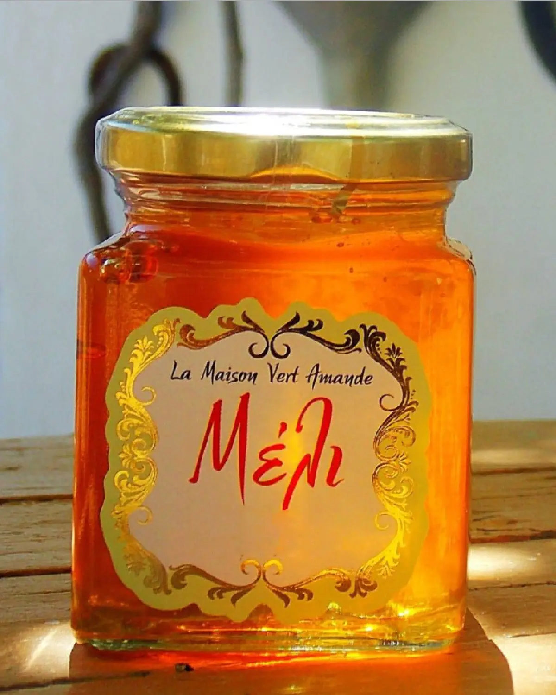

Μέλι
Εξ ολοκλήρου σπιτικό και παραδοσιακό
Το μέλι κατείχε πάντα μια ξεχωριστή θέση στην ανθρωπότητα. Το χρώμα του και τα αρμονικά αρώματά του το έχουν καταστήσει ένα μοναδικό προϊόν. Συμβολίζει εναλλάξ τη δύναμη, την απόλαυση, το αντίδοτο, την ενέργεια, την ανοσία και πολλά άλλα.

Οι ευεργετικές του ιδιότητες είναι πλέον αποδεδειγμένες. Το μέλι φαίνεται μάλιστα να αποτελεί ένα εξαιρετικό προϊόν που συμβάλλει στη θεραπεία του διαβήτη, ενώ δρα επίσης στα λιπίδια, στη χοληστερόλη, σε ορισμένα ηπατικά ένζυμα και στο πάγκρεας. Αυτό το φυσικό και γευστικό προϊόν μπορεί να καταναλωθεί από βρέφη άνω του ενός έτους, λόγω των θρεπτικών του ιδιοτήτων, καθώς και από τους διαβητικούς.
Από την αρχαιότητα, το μέλι χρησιμοποιείται για θεραπευτικούς σκοπούς: ήδη ο Ιπποκράτης συνιστούσε τη χρήση του για τη θεραπεία ανοιχτών πληγών και λοιμώξεων του λαιμού. Προφανώς, είναι προτιμότερο να γλυκαίνουμε τα φαγητά μας με μέλι παρά με ζάχαρη: το μέλι περιέχει κυρίως φρουκτόζη και γλυκόζη, ένας τύπος ζάχαρης που απορροφάται αργά και είναι ιδιαίτερα κατάλληλος για τους αθλητές. Όταν χρησιμοποιείται στη ζαχαροπλαστική, διατηρεί την υγρασία, γεγονός που επιτρέπει στα κέικ με μέλι να διατηρούνται για μεγαλύτερο χρονικό διάστημα χωρίς να ξεραίνονται.
Η παραγωγή της μελισσοκομικής μονάδας La Maison Vert Amande είναι εξ ολοκλήρου σπιτική και χειροποίητη. Συλλέγουμε το μέλι μας με τη μέγιστη προσοχή και προβαίνουμε στη χειροκίνητη εξαγωγή του με άμεση συσκευασία σε βάζα (κάτι που το σέβεται και διατηρεί τα λεπτά λουλουδάτα αρώματά του) εδώ στη La Maison Vert Amande. Δεν πραγματοποιούμε αγορά μελιού από τρίτους ούτε αναλαμβάνουμε εργασίες για λογαριασμό τρίτων. Είμαστε παραγωγοί από την αρχή μέχρι το τέλος, και αυτό κάνει όλη τη διαφορά.
Εγγυόμαστε μέλι υψηλής ποιότητας. Η ετικέτα των προϊόντων μας έχει προσεγμένο σχεδιασμό. Το μέλι μας δεν είναι ούτε εμπλουτισμένο ούτε θερμαινόμενο. Για να διασφαλίσουμε την ποιότητα της γενετικής, τα σμήνη μας είναι παραγωγικά και απόλυτα υγιή.
Η εργασία με αυτά τα έντομα είναι συναρπαστική. Σεβόμενοι τη μέλισσα και το έργο της, ευαισθητοποιώντας τον καταναλωτή ως προς τον σεβασμό του περιβάλλοντος, δίνοντας τη δυνατότητα στους καταναλωτές να έχουν πρόσβαση σε ποιοτικό μέλι, προσφεύγοντας στην αλληλοβοήθεια και τον συντονισμό με γειτονικούς μελισσοκόμους, οι οποίοι και αυτοί σέβονται τις αξίες των πρακτικών τους (βιώσιμη ανάπτυξη, βιοποικιλότητα), αντί να προσθέτουμε στοιχεία σε έναν ανταγωνισμό που αποδυναμώνει ολόκληρο το επάγγελμα, αυτό μας επιτρέπει να ζούμε βιώσιμα από το επάγγελμά μας.
Ο Τζορτζ
Επαγγελματίας μελισσοκόμος
Ο Τζορτζ είναι επαγγελματίας μελισσοκόμος εδώ και περισσότερα από 40 χρόνια. Η εκμετάλλευση, που ήταν πολύ μικρή στην αρχή, έχει αναπτυχθεί με την πάροδο των ετών. Κάθε χρόνο, η κατάσταση είναι διαφορετική. Οι συγκομιδές μπορεί να είναι εξαιρετικές ή χαμηλές, ή ακόμα και σχεδόν μηδενικές. Οι συνέπειες είναι άμεσες: οι επενδύσεις που επιτρέπουν την ανάπτυξη της εκμετάλλευσης πρέπει να επανεξεταστούν και να μελετηθούν προσεκτικά.
Η μελισσοκομία δεν είναι σαν το να μεγαλώνεις ένα σκύλο ή μια γάτα. Πρέπει να γνωρίζεις ότι θα υπάρχουν απαιτήσεις και περιορισμοί και ότι θα χρειαστεί να αντιμετωπίσεις δυσκολίες. Η μελισσοκομία απαιτεί σκέψη, προσοχή, χρόνο που πρέπει να αφιερωθεί, καθώς και σταθερότητα τόσο στην κοινωνική όσο και στην επαγγελματική ζωή. Η ζωή πρέπει να είναι σε αρμονία με τη μελισσοκομία.
Στη La Maison Vert Amande, τα μέσα μας είναι απλά και αποτελεσματικά. Επειδή είμαστε παθιασμένοι με το επάγγελμά μας και επειδή στόχος μας είναι να προσφέρουμε μέλι υψηλής ποιότητας, καταβάλλουμε κάθε δυνατή προσπάθεια, συμβάλλοντας καθημερινά στην ανάπτυξη και την ευημερία των μελισσών.